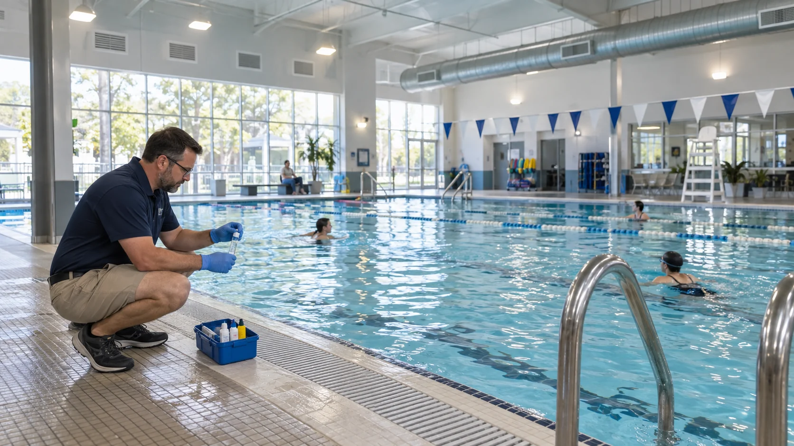
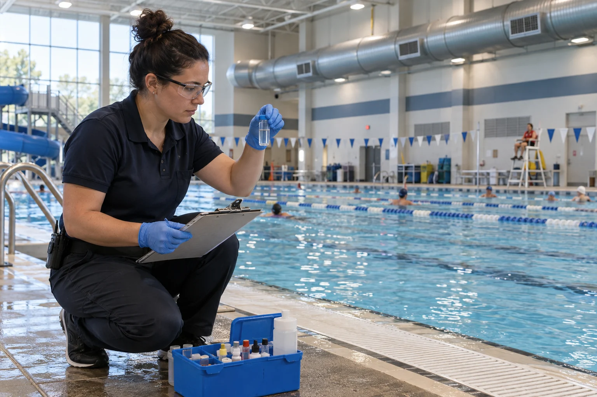
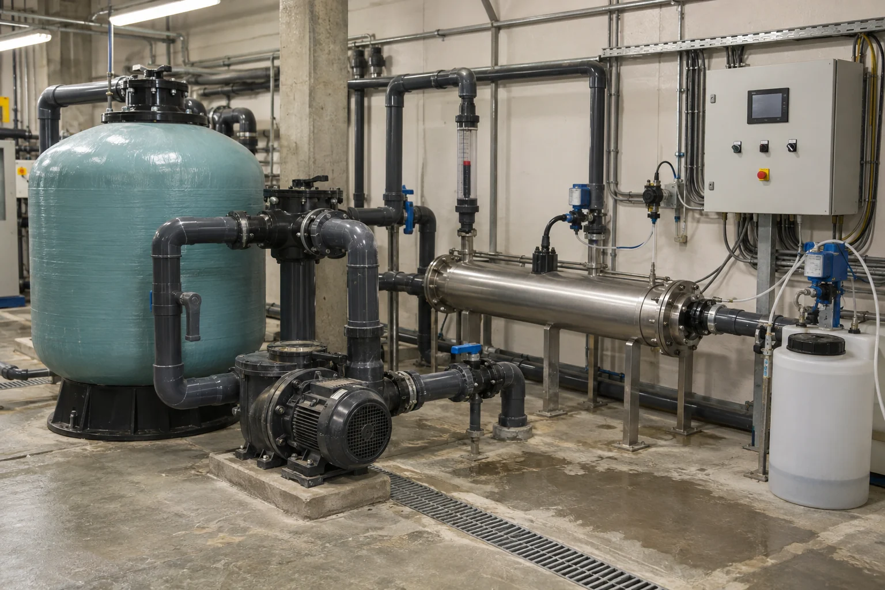

Why Use Medium-Pressure UV in a Commercial Pool? A Buyer’s Guide
What medium-pressure UV can and cannot do in a commercial pool — chlorine residual, chloramines, compliance documents and RFQ inputs
Ask an Engineering Question ↗
Why use medium-pressure UV in a commercial pool?
The short answer: Medium-pressure UV is a secondary treatment system for commercial pools. It adds another barrier against microorganisms and can help reduce some chloramines. It does not replace chlorine, filtration, circulation, make-up water, or ventilation.
Not every pool needs medium-pressure UV. It is more worth evaluating for busy indoor pools, water parks, children’s splash areas, therapy pools, and high-flow projects with limited plant-room space. The choice between low- and medium-pressure UV should be based on actual flow, UV transmittance, local regulations, third-party validation, and long-term operating cost—not lamp power alone.
On this page
- Does a Pool Still Need Chlorine After UV Is Installed?
- What Problems Can Pool UV Help Address?
- Can UV Completely Fix “Chlorine Smell” and Indoor Air Problems?
- What Is the Difference Between Low- and Medium-Pressure UV?
- Which Pools Are More Likely to Benefit From Medium-Pressure UV?
- Project Record: 2025 Hotel Pool with a 1.8 kW Medium-Pressure UV Unit
- Can Medium-Pressure UV Create New Water-Quality Concerns?
- Which Compliance Documents Should Buyers Request?
- Is 40 mJ/cm² a Universal Standard for Every Pool UV System?
- What Information Should Be Included in an RFQ?
- What Should Operators Monitor?
- How Can Buyers Make an Initial KONCHE Medium-Pressure UV Selection?
- Five Common Buying Mistakes
- Frequently Asked Questions
Does a Pool Still Need Chlorine After UV Is Installed?
Yes.
UV treats only the water that passes through the reactor. Swimmers continually introduce microorganisms, sweat, urea, personal-care products, and other contaminants into the pool. UV does not leave a lasting disinfectant residual after the water exits the reactor, so the pool must still maintain the chlorine or bromine residual required by local rules.
A simple way to understand the two systems is:
- Chlorine stays in the pool and provides continuous protection.
- UV acts as an additional treatment checkpoint in the recirculation line.
The US CDC’s 2024 Model Aquatic Health Code (MAHC) also treats UV and ozone as secondary or supplemental systems, not replacements for the primary disinfectant.
Be cautious if a supplier promotes a commercial UV system as a way to operate a “chlorine-free pool.”
What Problems Can Pool UV Help Address?
1. It Adds Another Microbial Barrier
Some microorganisms are more resistant to chlorine than common bacteria. UV provides an additional treatment step for recirculated water. This can be particularly useful in higher-risk settings such as children’s splash facilities, water parks, and therapy pools.
2. It Can Help Reduce Some Chloramines
Sweat, urea, and other substances introduced by swimmers react with chlorine and form chloramines and other byproducts. The familiar “pool chlorine smell,” eye irritation, and some indoor air-quality complaints are often associated with these compounds.
UV can break down some inorganic chloramines inside the reactor. It cannot guarantee zero chloramines throughout the pool because swimmers continue to introduce new contaminants.
3. It Can Support Busy Facilities
In pools with heavy bather loads and long opening hours, UV can be one part of a broader water-quality strategy. It still needs to work alongside adequate filtration, circulation, automatic chemical dosing, make-up water, and ventilation.
Can UV Completely Fix “Chlorine Smell” and Indoor Air Problems?
Not by itself.
UV can reduce some chloramines, but indoor air quality also depends on:
- daily bather load;
- whether swimmers shower before entering;
- how well the water circulates;
- whether enough fresh make-up water is added;
- whether disinfectant residual and pH remain stable;
- whether contaminated air above the water is removed effectively; and
- whether the fresh-air, exhaust, and dehumidification systems are properly designed and operated.
Research shows that both low- and medium-pressure UV can break down inorganic chloramines. In one field study, trichloramine fell by about 40%–50% across the UV reactors. The improvement across the whole pool was smaller because new trichloramine continued to form in the pool.
UV can help, but it cannot replace ventilation or good day-to-day operation.

What Is the Difference Between Low- and Medium-Pressure UV?
| What buyers should compare | Low-pressure UV | Medium-pressure UV |
|---|---|---|
| Light output | Concentrated mainly around 254 nm | Multiple wavelengths across roughly 200–400 nm |
| Power per lamp | Lower | Higher |
| Equipment footprint | May require more lamps at high flow | May use fewer lamps and offer a more compact system |
| Energy use | Often more energy-efficient for conventional disinfection duties | Usually has higher power and cooling requirements |
| Chloramine treatment | Can break down inorganic chloramines | Also breaks down inorganic chloramines, with more complex photochemical effects |
| Maintenance considerations | The system may contain more lamps | Fewer lamps may be used, but each has higher power; cooling and start-stop cycles need closer attention |
| Often considered for | Conventional projects with enough space and a strong focus on energy efficiency | High-flow projects, limited plant-room space, or applications requiring a broader UV spectrum |
Do not accept the simple claim that “low-pressure UV treats only one chloramine, while medium-pressure UV treats them all.” Published research shows that both types can photolyze monochloramine, dichloramine, and trichloramine.
The useful comparison is whether each specific model can meet the project requirement at the maximum flow and worst expected water quality—and whether that performance is supported by third-party validation.

Which Pools Are More Likely to Benefit From Medium-Pressure UV?
| Pool type | Priority for evaluation | Why |
|---|---|---|
| Busy indoor pool | High | Greater pressure to manage chloramines, odor, and indoor air |
| Water park or interactive splash facility | High | Heavy bather and contaminant loads; some jurisdictions require secondary treatment |
| Children’s or therapy pool | High | Users may be more vulnerable, so risk-control requirements are often stricter |
| Hotel or fitness-club pool | Depends on use | More worth evaluating when peak occupancy is high or indoor odor is a recurring issue |
| Lightly used outdoor pool | Not always | If water quality is already stable, the extra benefit may be limited |
| A pool that only wants to use less chlorine | Not a sufficient reason | UV cannot replace the required primary-disinfectant residual |
If the existing filtration, dosing, circulation, or ventilation system is not working properly, address those basic issues before deciding whether to add UV.
Project Record: 2025 Hotel Pool with a 1.8 kW Medium-Pressure UV Unit
The available records describe a 2025 equipment-supply project for a hotel swimming pool. The system has one recirculation pump with an actual operating flow of 100–120 m³/h and one KCM-UV1.8KW medium-pressure UV unit. The UV reactor is installed in series on the suction side of the recirculation pump, so the actual flow through the reactor is also within 100–120 m³/h.
The total pool-water volume is 600 m³. At the actual recirculation flow of 100–120 m³/h, the theoretical turnover time is approximately five to six hours. For reference, commercial pools are commonly designed to turn over every three to four hours.

The current photographs and records support the physical equipment supply, control cabinets, and factory testing. They do not include before-and-after chloramine, microbial, or indoor air-quality results. This should therefore be presented as an equipment-supply and factory-test record, not as proof of a stated percentage improvement in water quality.
View the complete project parameters, estimation method, and factory-test photographs
Can Medium-Pressure UV Create New Water-Quality Concerns?
It can affect water chemistry, so buyers should look beyond the reduction in chloramines.
When UV and chlorine are used together, different disinfection byproducts may increase, decrease, or remain broadly unchanged. The result depends on the source water, bather load, chlorine level, UV dose, and make-up water rate.
For a busy indoor pool, consider monitoring the following before and after a retrofit:
- free chlorine, total chlorine, and combined chlorine;
- pH, water temperature, turbidity, and UV transmittance;
- odor and ventilation performance in the facility;
- bather count, make-up water volume, and operating hours; and
- any additional byproducts required by the project or local authority.
Do not turn “helps reduce chloramines” into a claim that the system “produces no byproducts.”
Which Compliance Documents Should Buyers Request?
A pool UV system is not simply a high-powered lamp. Compliance cannot be judged from lamp wattage alone.
For projects that follow the CDC MAHC or similar requirements, buyers should confirm:
- Whether the exact model holds the certification required by the project, such as NSF/ANSI 50.
- Whether performance is supported by independent third-party validation rather than only the manufacturer’s own testing.
- The maximum validated flow and minimum validated UV transmittance.
- The validated effective UV dose and pathogen-reduction performance under those conditions.
- Whether the package includes a UV-intensity sensor, flow monitoring, alarms, and safety interlocks.
- Where the unit must be installed in the treatment process.
- How lamps, quartz sleeves, sensors, and flowmeters must be maintained, calibrated, and documented.
The MAHC is a model code, not a US federal law that automatically applies everywhere. Confirm the adopted edition and exact requirements with the local authority having jurisdiction (AHJ).
Is 40 mJ/cm² a Universal Standard for Every Pool UV System?
No.
The figure 40 mJ/cm² appears frequently in UV literature, but in the MAHC it forms part of a specific route for equipment certification and pathogen-inactivation credit. Requirements can differ by pool type, treatment objective, and local regulation.
Do not ask only, “Does the system provide 40 mJ/cm²?” Also ask:
- At what flow is that dose achieved?
- What minimum UV transmittance is assumed?
- Is the figure a theoretical calculation or a third-party validated result?
- Is the target still achieved after allowing for lamp aging and quartz-sleeve fouling?
What Information Should Be Included in an RFQ?
The more complete the project data, the more reliable the model selection and quotation will be:
- Total water volume in the pool, balance tank, and piping.
- Main recirculation flow and the planned flow through the UV system.
- Maximum and minimum actual flow.
- UV transmittance, turbidity, hardness, iron, and water temperature.
- Pool type, daily bather load, and opening hours.
- Current disinfectant residual, pH, and combined-chlorine trends.
- Local code, certification, and pathogen-control requirements.
- Plant-room space, power supply, cooling, and service-access conditions.
- Alarm, remote-monitoring, and data-logging requirements.
- The operating period and spare-parts costs to be included in the life-cycle comparison.
If a supplier selects a model based only on the pool volume, ask for the sizing method to be explained again using the actual hydraulic and water-quality data.
What Should Operators Monitor?
After installation, operators should at least monitor:
- the actual flow through the UV reactor;
- UV intensity and alarm status;
- water temperature and cooling around a medium-pressure lamp;
- the number of lamp starts and stops;
- scaling or fouling on the quartz sleeve;
- scheduled calibration of the UV sensor and flowmeter; and
- whether the lamp has reached the manufacturer’s replacement condition.
For secondary-treatment UV, the CDC MAHC includes continuous monitoring of flow and UV intensity, continuous water-temperature monitoring for medium-pressure UV, and periodic alarm testing. Local rules and the equipment manual may specify different or additional frequencies.
How Can Buyers Make an Initial KONCHE Medium-Pressure UV Selection?
The KONCHE KCM-UV series uses medium-pressure lamps covering 200–400 nm, with 2–10 kW per lamp. The hotel pool project described in this article uses a KCM-UV1.8KW unit with an actual UV flow of 100–120 m³/h and a total pool-water volume of 600 m³.
However, 1.8 kW, 100–120 m³/h, and 600 m³ are equipment and operating parameters for this project, not proof of compliance with a particular certification. If the project calls for NSF/ANSI 50, MAHC, or another standard, verify the certificate for the exact model, the scope of independent validation, minimum UV transmittance, maximum validated flow, reduction-equivalent dose or performance curve, and the required interlocks before purchase.
Five Common Buying Mistakes
- Assuming that UV removes the need for chlorine.
- Comparing lamp wattage instead of validated effective dose.
- Checking only normal flow and ignoring peak flow and worst-case water quality.
- Treating a manufacturer’s internal test as independent third-party validation.
- Budgeting only for the reactor and omitting sensors, bypass piping, interlocks, spare parts, and maintenance.
Frequently Asked Questions
Is medium-pressure UV always better than low-pressure UV?
No. Medium-pressure equipment can be more compact, while low-pressure equipment is more energy-efficient in many applications. Compare the validated performance and long-term cost of specific models under the project’s actual operating conditions.
Can UV reduce combined chlorine to zero?
Usually not. Swimmers continually introduce new nitrogen-containing compounds, and the pool continues to form new chloramines. The practical goal is to meet local requirements and maintain stable performance—not to promise zero.
Can chlorine dosing be reduced after UV is installed?
Do not reduce it without approval. The disinfectant residual must continue to meet local regulations and the approved operating plan.
Can UV solve indoor pool air-quality problems?
It can help reduce some chloramines, but better indoor air also requires lower contaminant input and effective fresh-air supply, exhaust, and dehumidification.
Is a stated dose of 40 mJ/cm² enough to prove compliance?
Not by itself. Buyers also need to confirm the corresponding flow, minimum UV transmittance, validation method, and target pathogen.
Recommended for this application
Related KONCHE systems and guides for the duties discussed in this article:
2–10 kW broad-spectrum lamps for high-flow and demanding duties.
View ↗LOW-PRESSURE UVLow-Pressure UV Sterilizer254 nm sterilizers for recirculation and point-of-use duty, 0.25–50 m³/h.
View ↗CASE2025 Hotel Pool 1.8 kW MP UVEquipment-supply record: 600 m³ pool, 100–120 m³/h, KCM-UV1.8KW.
View ↗ARTICLEHow to Size a UV SystemThe four inputs that control UV sizing.
View ↗ARTICLEUV or Ozone?The differences buyers need to know.
View ↗ARTICLEUV Lamp ReplacementIntervals, output decay and quartz-sleeve care.
View ↗Size from the hydraulics,
not the lamp watts.
Send pool volume, recirculation flow, UV transmittance and local code requirements. KONCHE will map the duty to the correct medium-pressure UV unit and state the validation basis.
Get Expert Support →